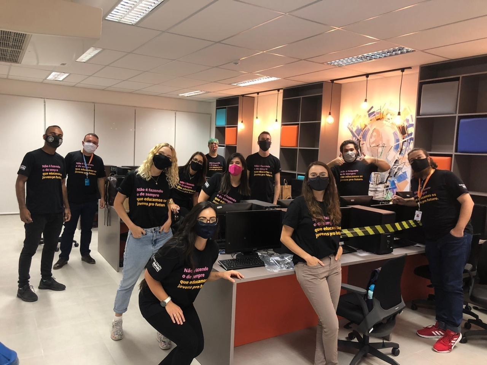
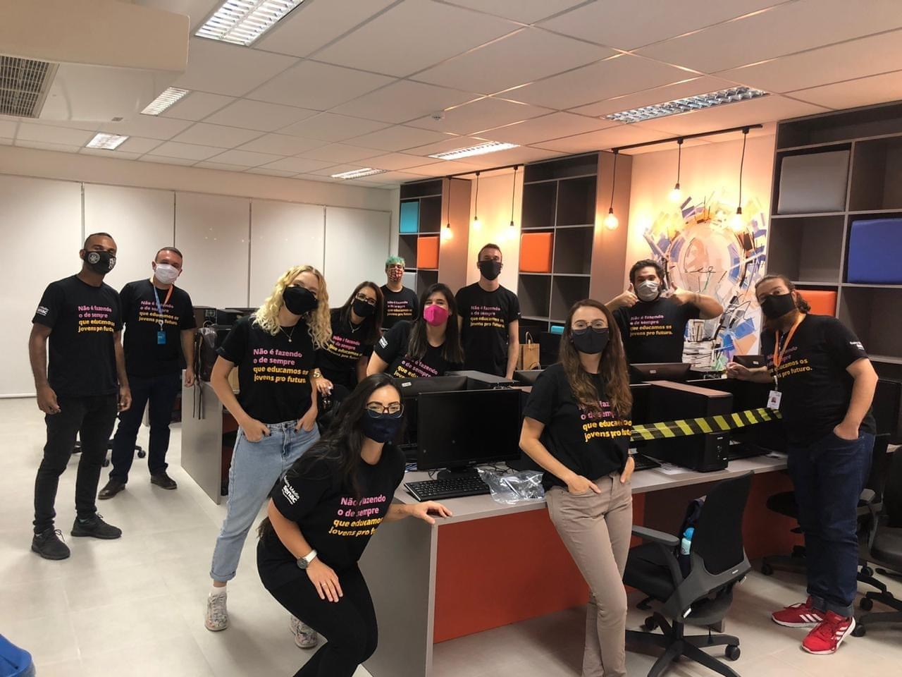

Senac São Leopoldo lança o Senac Ensino Médio. As aulas, que iniciam em março de 2021 e serão realizadas no Parque Tecnológico São Leopoldo - Tecnosinos, oportunizam que o estudante vivencie de forma concreta a construção do conhecimento por meio de metodologias estimulantes e desafiadoras, que possibilitam a transformação tanto do contexto em que vivem quanto de si mesmos. Integrado ao curso Técnico em Informática para Internet, o estudante termina o ensino médio já com uma profissão e um projeto de vida para chamar de seu.
O curso, que compreende toda a Base Nacional Comum Curricular (BNCC) do Ensino Médio, também desenvolve competências relativas aplicações para internet (Web e Web Mobile), além de preparar o estudante para o Exame Nacional do Ensino Médio (ENEM), para o vestibular e para o mercado de trabalho.
Com duração de três anos, o curso oportuniza uma experiência educacional realizada por meio de métodos, metodologias e estratégias que proporcionam o desenvolvimento de competências de maneira prática e reflexiva. Além disso, o modelo de ensino conta com um corpo de professores preparados para atuar em um nível educacional interdisciplinar, incentivando os jovens a atuarem de forma protagonista frente aos desafios que serão propostos.
BENEFÍCIOS SENAC-RS:
- Professores excelentes e preparados;
- Ensino dinâmico e inovador;
- Educação de qualidade;
- Excelente câmpus e estrutura;
- Novo método de ensino;
- Adequação às novas tecnologias;
- Preparação para o ENEM;
- Preparação para o futuro;
- Metodologia premiada.
DESCUBRA MAIS SOBRE O SENAC-RS:
- Missão, Visão e Princípios;- Senac Sustentabilidade;
- Código de ética;
- Premiações;
- Sobre o Senac-RS;
- Unisinos e EM Senac - São Leopoldo.
VÍDEOS EXPLICATIVOS SOBRE O ENSINO MÉDIO SENAC-RS:
CONHEÇA O CÂMPUS SENAC SÃO LEOPOLDO - ENSINO MÉDIO:


CURIOSIDADE TECNOSINOS:
No tecnosinos, onde as aulas do EM Senac São Leopoldo serão ministradas, há diversas oportunidades de estágio para Técnico de Informática,
curso técnico lecionado na escola, abrindo assim, variadas oportunidades profissionais aos alunos.
CONHEÇA A EQUIPE DO SENAC SÃO LEOPOLDO - ENSINO MÉDIO:
 

CÓDIGOS QUE SERÃO APRENDIDOS NO TÉCNICO DO ENSINO MÉDIO SENAC:
O QUE É A TAG "HEAD"?
Em HTML, a tag
é usada como cabeçalho, ou seja, um conjunto de informações de uma página de um site.Se você lembrar bem, cabeçalho é um trecho de um documento que fica no início e fornece informações. Por
exemplo, no cabeçalho de uma prova da escola você preenchia seu nome, número, nome do professor, nome da
disciplina etc.
O QUE É A TAG "BODY"?
Tudo o que vemos em um site, estará dentro da tag body. Como o próprio nome sugere, a tag body define
o corpo de um site. É nela que estarão as informações visíveis para o usuário da internet. Tudo que
você está lendo nesse site, os links, imagens e vídeos que estão vendo, estão dentro da tag "

O QUE É UM AGENTE CONVERSACIONAL?
Sistema projetado para receber determinados tipos de perguntas, pré-programadas pelo programador,
e ter respostas prontas pra esse tipo de pergunta. Basicamente você vai programar um sistema para conversar
com um usuário da internet sobre determinado assunto da sua escolha. Simula uma conversa humana.
O QUE MEU AIML (AGENTE CONVERSACIONAL) SABE?
- O que são ODS(s);
- Diferença entre AIDS e HIV;
- Benefícios do Ensino Médio Senac;
- Senac-RS;
- O que é a tag head;
- O que é a tag body.